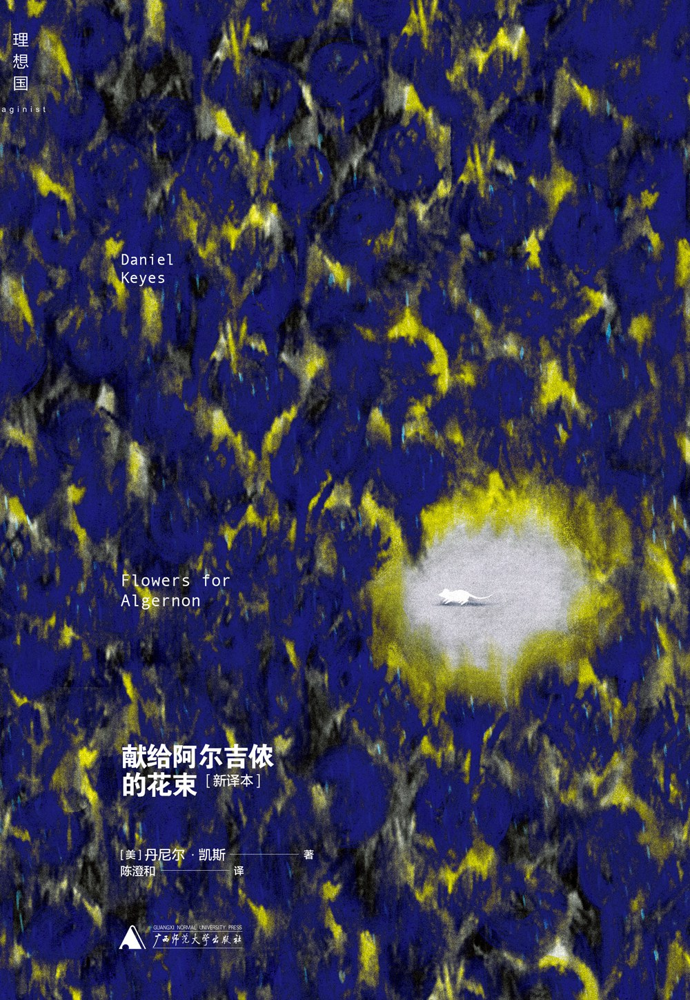

献给阿尔吉侬的花束

内容简介 · · · · · ·
声称能改造智能的科学实验在白老鼠阿尔吉侬身上获得了突破性的进展，下一步急需进行人体实验。个性和善、学习态度积极的心智障碍者查理·高登成为最佳人选。手术成功后，查理的智商从68跃升为185，然而那些从未有过的情绪和记忆也逐渐浮现。
作者简介 · · · · · ·
丹尼尔·凯斯（Daniel Keyes，1927—2014）出生于纽约，拥有布鲁克林大学心理学学位。1950年代早期进入《漫威科幻故事杂志》（Marvel Science Stories）工作，随后转换跑道，成为时装摄影师与中学教师。后获得布鲁克林大学英美文学 学位。